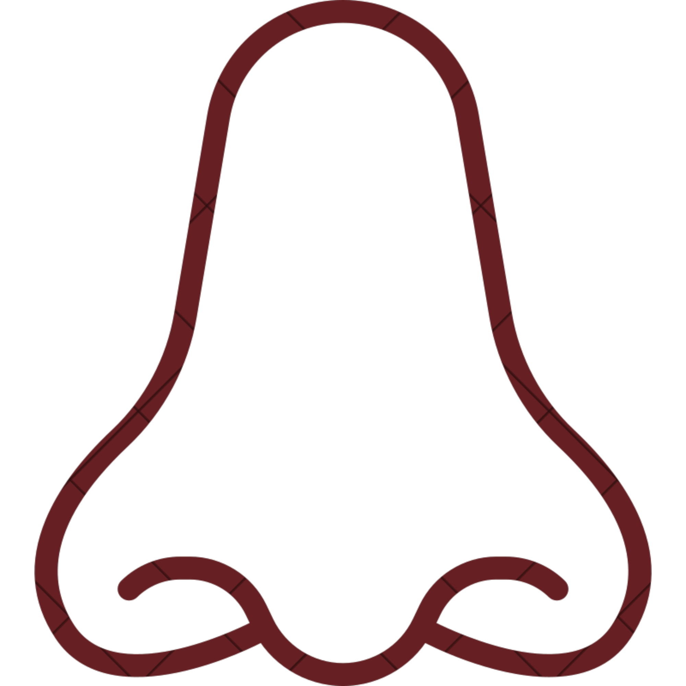
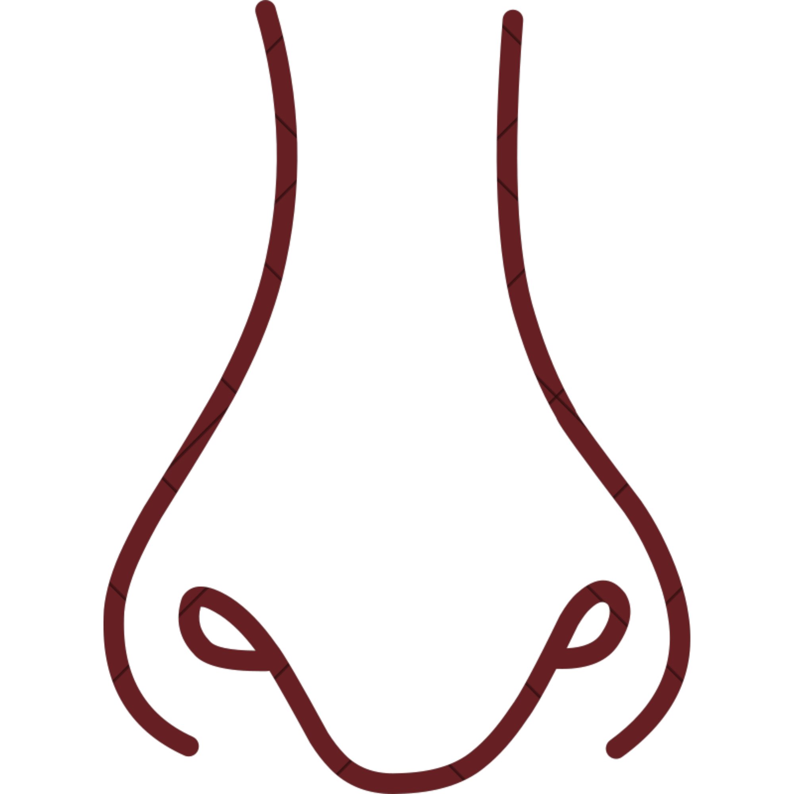
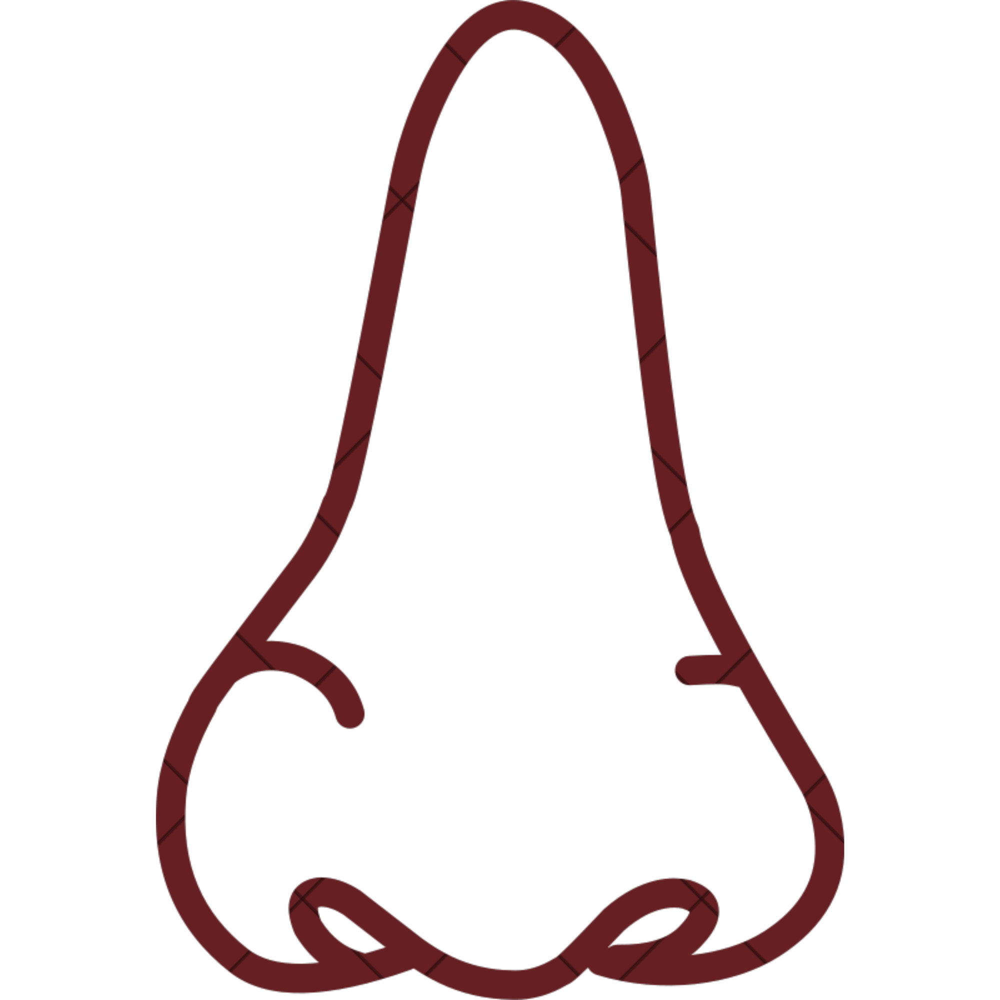
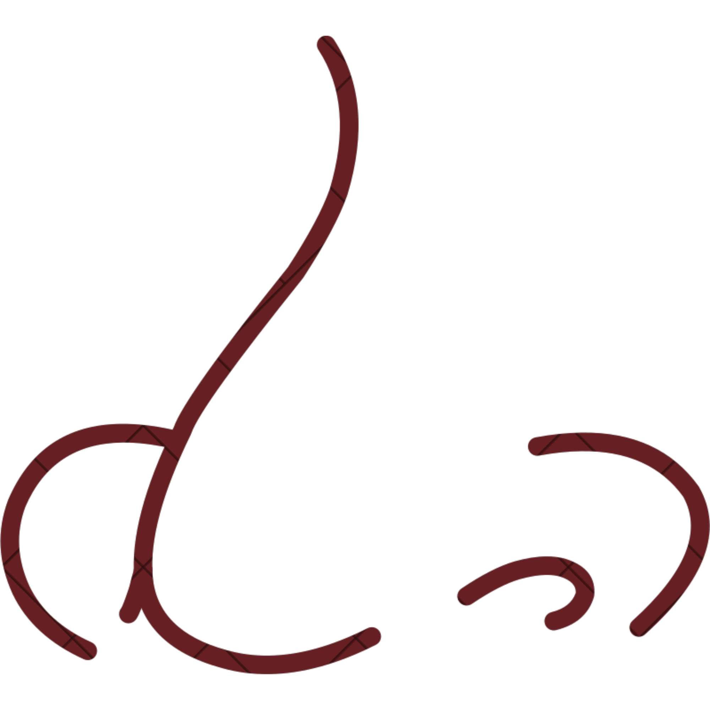
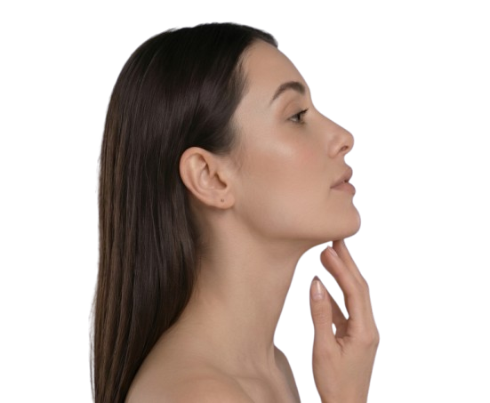

Ponta
caída
RINOPLASTIA PERSONALIZADA
Seu nariz em harmonia
Seu nariz em harmonia
com o seu rosto
Natural, funcional e feito para você.
Rinoplastia que valoriza sua identidade, melhora sua respiração e devolve sua autoestima com resultados naturais e duradouros.
+26 anos
de experiência
de experiência
Resultados
naturais
naturais
Atendimento em
Brasília, Goiânia e São Paulo
Brasília, Goiânia e São Paulo
QUERO AVALIAR MEU CASO
Atendimento humanizado e exclusivo
Mais de
3.000 cirurgias
realizadas
3.000 cirurgias
realizadas
Você se incomoda com algum desses aspectos?
Pequenos detalhes podem afetar como você se sente todos os dias.

Ponta
batatuda

Dorso
alto

Dorso
torto

Asa
larga

Dorso baixo
(negroide)
 ANTES
ANTES
 DEPOIS
DEPOIS
Mais do que estética,
é equilíbrio e bem-estar.
A rinoplastia vai além da aparência. É sobre se sentir bem consigo mesma, respirar melhor e viver com mais confiança.
- Harmonia facial e naturalidade
- Preservação da função respiratória
- Respeito à sua identidade
- Resultados personalizados
Cada nariz é único. Cada cirurgia também.
A abordagem é totalmente personalizada para atender às suas necessidades.
Ponta caída
Reposicionamento estrutural para elevação e leveza.
Ponta batatuda
Definição da ponta e ajuste da espessura da pele.
Dorso alto
Remoção controlada da giba, mantendo a naturalidade.
Dorso torto
Correção do desvio com alinhamento ósseo e cartilaginoso.
Asa larga
Afinamento das asas nasais com naturalidade.
Experiência e precisão que
fazem a diferença.
O Dr. Alexandre Nunes possui mais de 26 anos de experiência em cirurgias plásticas, com foco em rinoplastia estrutural e preservação da função respiratória.
CRM 23816 | RQE 10837
Formação nacional
e internacional
e internacional
Técnicas avançadas
e atualizadas
e atualizadas
Atendimento exclusivo
e humanizado
e humanizado
Descubra a melhor abordagem para o seu caso
Responda algumas perguntas rápidas e receba uma avaliação inicial personalizada.
Avaliação Pronta!
Suas respostas foram registradas. Envie sua pré-avaliação para nossa equipe realizar o agendamento.
Respirar bem faz parte do resultado
Em muitos casos, a rinoplastia corrige desvios de septo, obstruções e melhora significativamente a respiração.
Naturalidade é prioridade
Nada de resultados artificiais. O objetivo é que você se sinta melhor, sem que percebam que você fez cirurgia.
Sua autoestima merece esse cuidado
Você merece se olhar no espelho e gostar do que vê. Vamos juntos nessa transformação.

Os horários são limitados para avaliação.
Agende agora sua consulta e dê o primeiro passo para se sentir bem com o seu rosto.
AGENDAR AVALIAÇÃO
Atendimento em Brasília, Goiânia e São Paulo